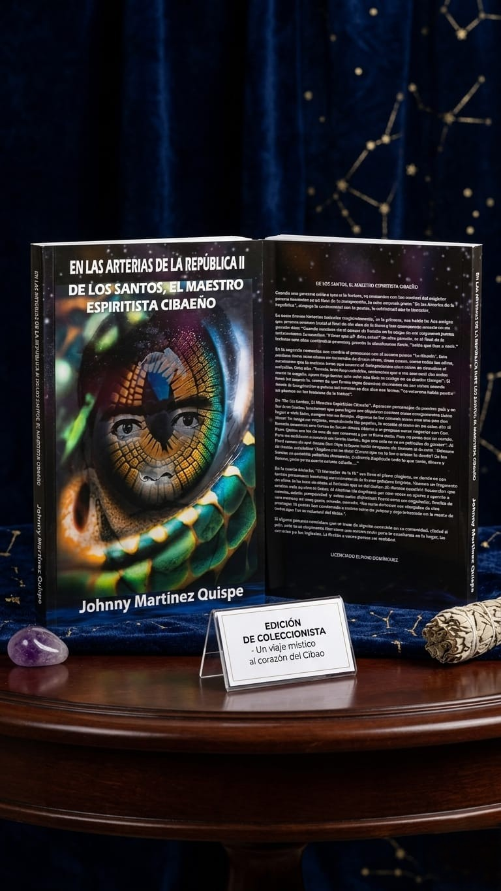
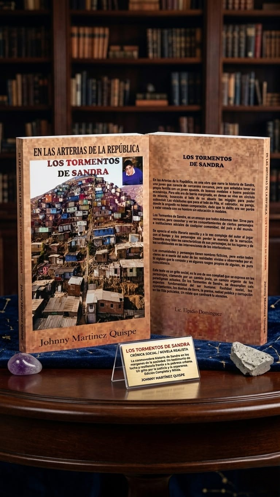
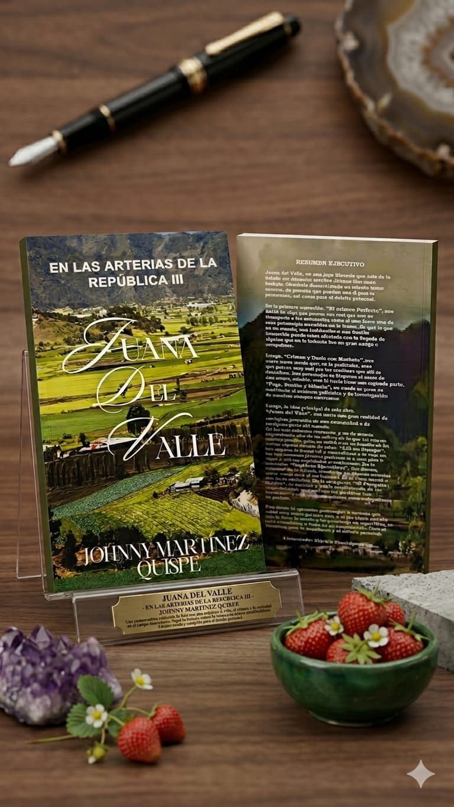

Obras literarias de Johnny Martínez Quispe que narran la realidad social, cultural y espiritual de nuestra República Dominicana.
← Volver a la TiendaEscritor, educador y figura cultural de Constanza. Sus obras reflejan la verdad de nuestro pueblo dominicano.

📖 DisponibleEl autor conjuga lo sentimental con lo jocoso y lo subliminal con lo increíble. A través de relatos magistrales como "La Abuela" y "El Mercader de la Fe", nos sumerge en el panorama del espiritismo cibaeño, las creencias locales y ofrece una crítica a las realidades sociales y religiosas, demostrando que a veces la ficción parece ser realidad.

📖 DisponibleUn profundo grito social que narra la cruda historia de Sandra, una joven de barrio marginado que anhela tener su propia familia en medio de la miseria. A través de sus vivencias, la obra expone realidades palpables de la sociedad: ayuntamientos, dueños de tierras, la prensa, la salud pública y la corrupción. Un relato realista que cautivará la atención.

📖 DisponibleUna joya literaria que narra la gran realidad de cualquier jovencita en una comunidad rural. Incluye relatos impactantes como "El Crimen Perfecto" y "Crimen y Duelo con Machete", además de agudas reflexiones sobre la explotación social y la moralidad de la clase media en cuentos como "Lill en Europa" y "Hombres Ejecutivos".